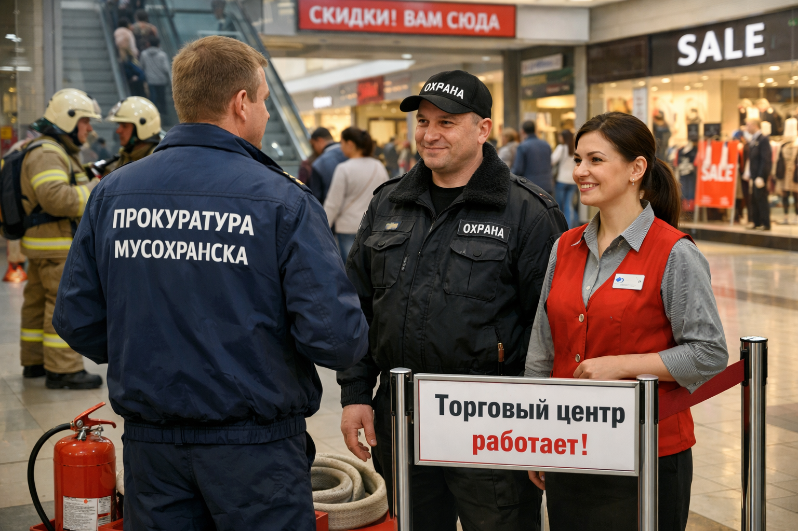
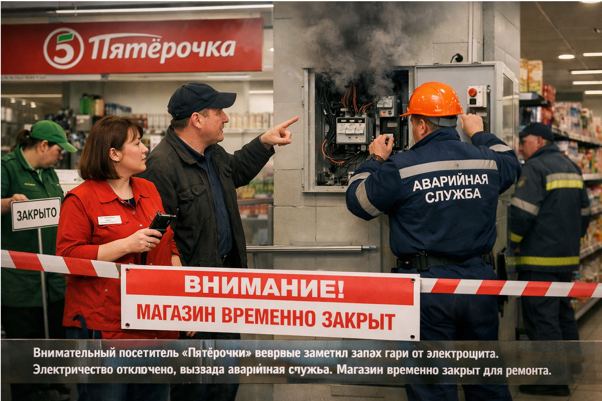

Житель Мусохранска, пропавший во время прогулки, благополучно найден силами добровольцев
20 ноября 2025 в 19:45
45-летний мужчина, отправившийся на природу, вовремя вернулся домой после того, как его мобильный телефон разрядился. Соседи и участники поискового отряда «ЛизаАлерт» оперативно откликнулись, и уже через несколько часов он вышел на связь, здоров и невредим. Сам мужчина поблагодарил всех за участие и заботу.
Экология
Активисты и местные жители совместными усилиями преобразили территорию в Мусохранске
Изображение сделано с помощью sora
После обращения жителей в соцсетях, общественный инспектор Илья Середюк не просто проверил информацию о старой свалке, а организовал субботник. К инициативе присоединились десятки человек. Теперь на расчищенном месте планируется разбить небольшую детскую площадку.
Безопасность
Проверка после инцидента в ТЦ Мусохранска подтвердила оперативность работы экстренных служб

Изображение сделано с помощью sora
Прокуратура провела плановую проверку торгового центра в Мусохранске после небольшого возгорания в подсобном помещении. Отмечена слаженная работа персонала и службы охраны, которые по всем правилам эвакуировали людей и локализовали очаг до приезда пожарных. Торговый центр возобновил работу.
Оперативность
Пожарные МЧС оперативно ликвидировали возгорание в торговом центре Мусохранска, никто не пострадал
Изображение сделано с помощью sora
Благодаря быстрому реагированию пожарно-спасательных подразделений, возгорание на площади 900 квадратных метров в ТЦ было потушено в кратчайшие сроки. Все посетители и работники были заранее эвакуированы по отработанной схеме. Работа спасателей предотвратила распространение огня.
Бдительность
Бдительность покупателя помогла предотвратить возможную аварию в «Пятёрочке»

Изображение сделано с помощью sora
Один из посетителей магазина «Пятёрочка» вовремя заметил запах гари от электрощита и сообщил администрации. Персонал сразу же отключил электричество и вызвал аварийную службу. Магазин ненадолго приостановил работу для безопасного ремонта. Бдительность граждан помогла избежать неприятностей.